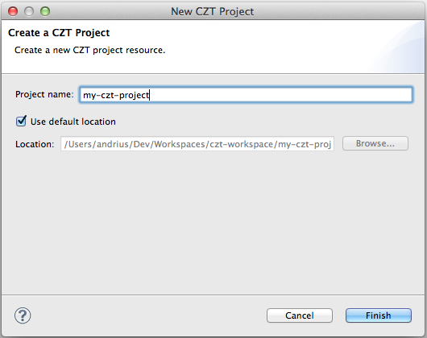

Create a new CZT project to contain Z specifications by selecting File > New > Project > CZT > CZT Project in the menu.

If you do not want to use the default location, specify one.
Note: you can create CZT project on you existing directories: just specify an existing directory in the Location field. The name does not have to match the directory.
If the Z perspective is not active at the moment, the wizard will ask you whether you want to open the Z perspective. It is highly recommended that you open it because it will automatically open a set of Eclipse views useful for the Z development. Then the new project will be created and selected in the workbench window.